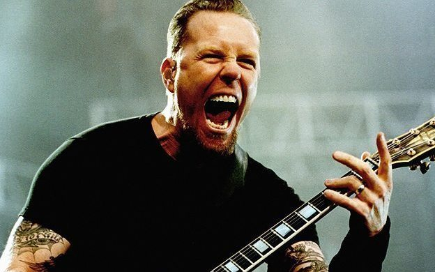
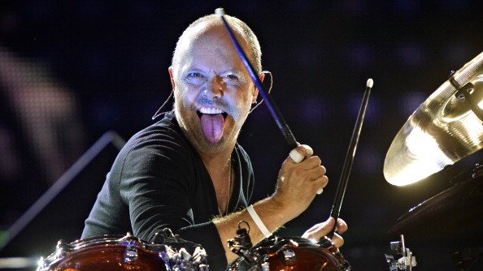
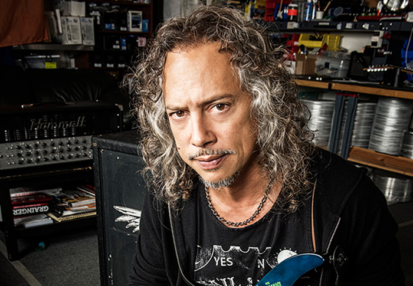
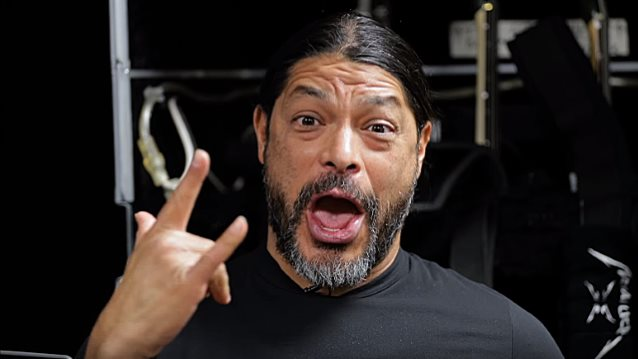

About the Band
Ah, the joy of humble beginnings…
Metallica, one of the biggest selling acts in American history, were born on October 28, 1981 when drummer Lars Ulrich
and guitar player/singer James Hetfield got together via Ulrich’s LA Recycler newspaper ad. Soon, the two had recruited
Hetfield’s friend and housemate Ron McGovney to play bass, Dave Mustaine to play lead guitar, and taken the name
Metallica after a suggestion from Bay Area metal scene friend Ron Quintana. Their ascent was to be relatively quick,
driven by sheer work-rate, effort and a rare musical chemistry. After hitting the opener’s circuit in LA (where they
supported the likes of Saxon) they recorded their first ever demo No Life ‘Til Leather. The tape-trading circuit went crazy
for it, and after repeatedly well-received shows in the Bay Area, Metallica found themselves relocating there after
convincing bassist Cliff Burton to leave his band Trauma and replace McGovney.
East Coast metal merchant Jon Zazula pitched the band on an album deal with his indie label Megaforce Records and
1983 found them traveling to New York in a stolen U-Haul to record their first album. Shortly after arriving in
New York in April 1983, Mustaine was replaced by Exodus shredder Kirk Hammett and the boys hit the studio for the first
time. The resulting debut album, Kill ‘Em All, exploded onto the scene later that year brandishing punk-encrusted,
crunchy metal riffery, the likes of “The Four Horsemen,” “Whiplash” and “Seek and Destroy” that were hailed as instant
classics. The stellar reception in the metal community allowed them to quickly make their second album Ride The
Lightning with producer Flemming Rassmussen in Copenhagen at Sweet Silence Studios during the summer of 1984.
With their writing chemistry maturing at an alarming rate of knots, classic compositions such as “For Whom The Bell
Tolls” and “Fade To Black” sat proudly with the aggression of “Fight Fire With Fire” and “Creeping Death.”
Q Prime Management and Elektra Records both moved quickly to take the band on by the Fall of ’84, band with the
road getting busier and more international, the bands’ stature rapidly grew.
In late 1985, the Rassmussen/Sweet Silence combination provided the underpinning for Master Of Puppets, the band’s
third album, which was mixed in LA with Michael Wagener and released in March 1986. “Battery,” the title track and
epic instrumental “Orion” were among the astounding compositions, and having secured a support slot with
Ozzy Osbourne, Master of Puppets hit the top 30 album charts and expanded their fan base beyond comprehension.
It was some ascent. Metallica appeared unstoppable. But a heinous challenge was to be thrown at them when on
September 27, 1986, they suffered a tragedy beyond words. On tour in Sweden, during an overnight drive the bands'
tour bus skidded out of control and flipped, killing Cliff Burton. His influence on the musical growth of the band
had been enormous, combining the DIY philosophies of jamming and experimenting with an acute knowledge of musical
theory. Faced with having to find a new path after 40+ auditions they tapped Jason Newsted from Flotsam & Jetsam
to take over bass duties. The quartet immediately jumpedvinto a tour and then quickly recorded an EP of cover tunes
titled The $5.98 E.P. Garage Days Re-Revisited the band literally did the dirty work in Ulrich's garage, which they
helped refit into a small studio space by hand themselves!).
The band recorded their fourth full-length album, ...And Justice For All, first with Rassmussen again taking the helm
(this time at One On One Studios in LA) after some initial work with Mike Clink (of Appetite for Destruction fame) didn’t
work out. Released in August 1988, the album reached #6 on the US charts, while the band was busy blowing headliners
Van Halen off the stage during the Monsters Of Rock tour before embarking upon their first headline worldwide arena
tour. Metallica also made their very first music video for “One,” a dark, monochromatic, violent, emotional piece which
underscored Metallica’s thorough uniqueness.
Then came stratospheric, explosive, cacophonous worldwide success.
The members
James Hetfield (Guitar)
Hetfield was born on August 3, 1963 in Downey, California,
the son of Cynthia Bassett (née Nourse), a light opera singer,
and Virgil Lee Hetfield, truck driver. He is of English, German,
Irish, and Scottish descent. He has two older
half-brothers from
his mother's first marriage and one younger sister.
His parents divorced in 1976 when Hetfield was 13.
They were very strict Christian Scientists, and in accordance with
their beliefs, they strongly disapproved
of medicine or any other
medical treatment and remained loyal to their faith, even as Cynthia
was dying from cancer. This upbringing became the inspiration
for many of Hetfield's lyrics during his career with Metallica,
most
notably in the songs "Dyers Eve" and "The God That Failed" from
And Justice For All and The Black Album respectively.
Lars Ulrich (Drummer)
Ulrich was born into an upper-middle-class family
in Gentofte, Denmark; the son of Lone (née Sylvester-Hvid)
and professional tennis player Torben Ulrich. His paternal grandfather
was professional tennis player Einer Ulrich. His paternal
grandmother,
Ulla Meyer, was from a Jewish family; as a result, Ulrich's grandfather
was persecuted by the Nazis during World War II.
Saxophonist Dexter Gordon was Ulrich's godfather, and he is a
childhood friend of musician
Neneh Cherry.
In February 1973, Ulrich's father obtained passes for five
of his friends to a Deep Purple concert held in the same Copenhagen
stadium as one of his tennis tournaments...
Kirk Hammett (Lead Guitar)
Hammett was born on November 18, 1962 in San Francisco,
and raised in the town of El Sobrante, California. He is the son of Teofila
"Chefela" (née Oyao) and Dennis L. Hammett (a Merchant Marine).
His mother is of Filipino descent and
his father was of English, German,
Scottish and Irish ancestry. He attended De Anza High School in Richmond,
California. While attending De Anza High School, he met Les Claypool of
Primus, and they remain close friends. Hammett has
a well-known passion
for horror movies; that stretches back to the late Sixties.
After spraining his arm in a fight with his sister at the age of five,
Hammett's parents placed him in front of the television. It was during
this
time that he first watched The Day of the Triffids.
After that, Hammett found himself drawn to his brother's Frankenstein
figures, and it wasn't long before he was spending his milk money on
horror magazines.
Robert Trujillo (Bass Guitar)
Roberto Agustin Trujillo was born in Santa Monica,
California. He is of Mexican descent. He grew up in Culver City, California,
where his father was a teacher at Culver City High School.
Trujillo was first exposed to music during his
childhood;
his mother was a huge fan of Motown, particularly musicians like
Marvin Gaye, James Brown, and Sly and the Family Stone. Trujillo stated
that "Jaco [Pastorius] was my hero growing up", and that the iconic
jazz bassist
changed his view of what the instrument could play:
"Hearing him was like hearing Eddie Van Halen doing "Eruption"
for the first time: You thought, 'What instrument is that?'
I loved jazz fusion and branched out from there. But Jaco
had an edge
that far exceeded his jazz persona. He was funk, he was rock,
he was soul. And his whole attitude was punk." He began playing in "a lot of
backyard party bands", playing music by Black Sabbath, Ozzy, Rush, and
Led
Zeppelin. He went to jazz school when he was 19 with the intention of
becoming a studio musician, but he maintained his passion for rock and metal.